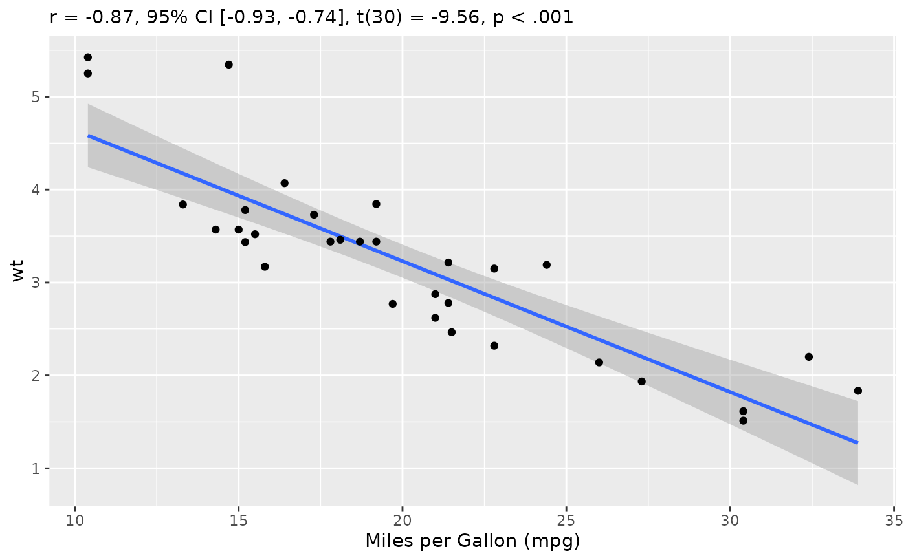
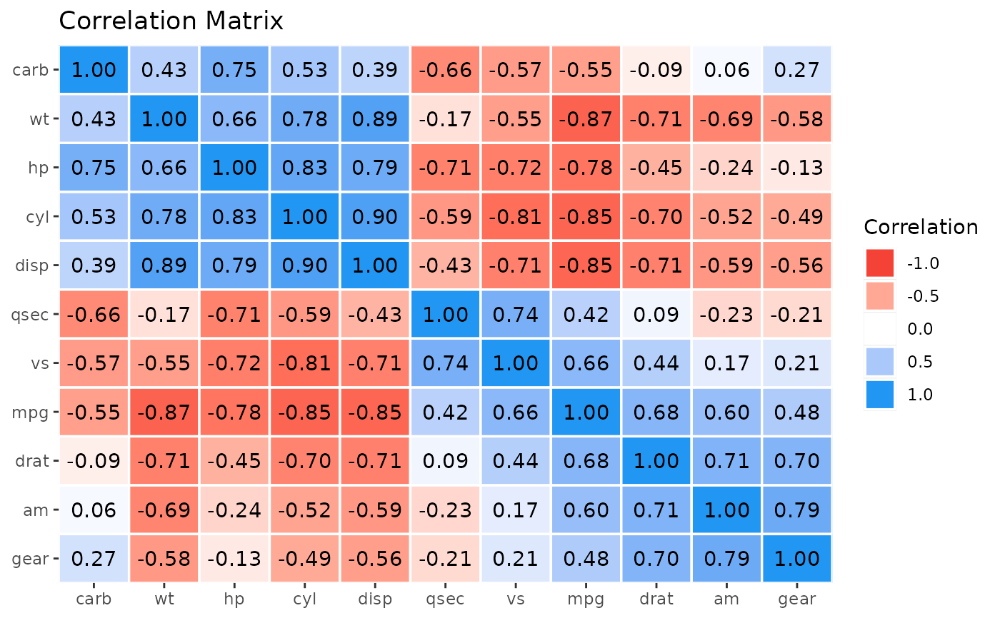
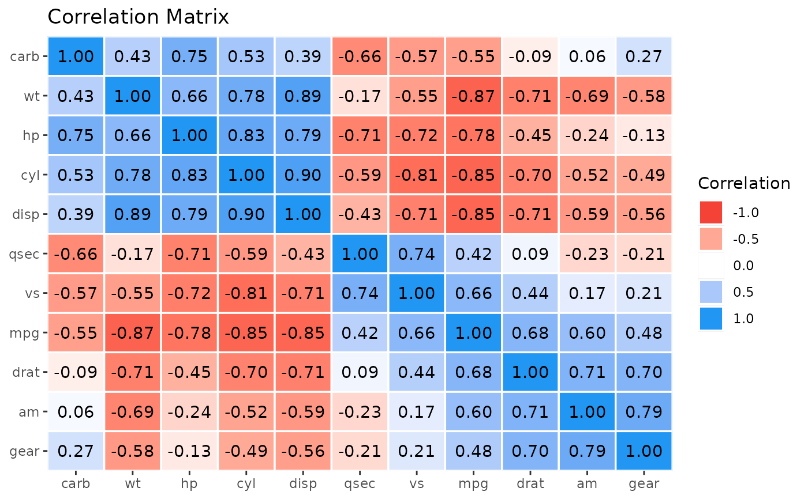

Visualisation Recipe for 'correlation' Objects
Source:R/visualisation_recipe.cor_test.R, R/visualisation_recipe.easycormatrix.R, R/visualisation_recipe.easycorrelation.R
visualisation_recipe.easycormatrix.RdObjects from the correlation package can be easily visualized. You can
simply run plot() on them, which will internally call the visualisation_recipe()
method to produce a basic ggplot. You can customize this plot ad-hoc or via
the arguments described below.
See examples here.
Usage
# S3 method for easycor_test
visualisation_recipe(
x,
show_data = "point",
show_text = "subtitle",
smooth = NULL,
point = NULL,
text = NULL,
labs = NULL,
...
)
# S3 method for easycormatrix
visualisation_recipe(
x,
show_data = "tile",
show_text = "text",
show_legend = TRUE,
tile = NULL,
point = NULL,
text = NULL,
scale = NULL,
scale_fill = NULL,
labs = NULL,
type = show_data,
...
)
# S3 method for easycorrelation
visualisation_recipe(x, ...)Arguments
- x
A correlation object.
- show_data
Show data. For correlation matrices, can be
"tile"(default) or"point".- show_text
Show labels with matrix values.
- ...
Other arguments passed to other functions.
- show_legend
Show legend. Can be set to
FALSEto remove the legend.- tile, point, text, scale, scale_fill, smooth, labs
Additional aesthetics and parameters for the geoms (see customization example).
- type
Alias for
show_data, for backwards compatibility.
Examples
# \donttest{
# ==============================================
# Correlation Test
# ==============================================
if (require("see")) {
rez <- cor_test(mtcars, "mpg", "wt")
layers <- visualisation_recipe(rez, labs = list(x = "Miles per Gallon (mpg)"))
layers
plot(layers)
plot(rez,
show_text = "label",
point = list(color = "#f44336"),
text = list(fontface = "bold"),
show_statistic = FALSE, show_ci = FALSE, stars = TRUE
)
}
#> Loading required package: see

# }
# ==============================================
# Correlation Matrix
# ==============================================
if (require("see")) {
rez <- correlation(mtcars)
x <- cor_sort(as.matrix(rez))
layers <- visualisation_recipe(x)
layers
plot(layers)
#' Get more details using `summary()`
x <- summary(rez, redundant = TRUE, digits = 3)
plot(visualisation_recipe(x))
# Customize
x <- summary(rez)
layers <- visualisation_recipe(x,
show_data = "points",
scale = list(range = c(10, 20)),
scale_fill = list(
high = "#FF5722",
low = "#673AB7",
name = "r"
),
text = list(color = "white"),
labs = list(title = "My Plot")
)
plot(layers) + theme_modern()
}
 # \donttest{
# ==============================================
# Correlation Results (easycorrelation)
# ==============================================
if (require("see") && require("tidygraph") && require("ggraph")) {
rez <- correlation(iris)
layers <- visualisation_recipe(rez)
layers
plot(layers)
}
#> Loading required package: tidygraph
#>
#> Attaching package: ‘tidygraph’
#> The following objects are masked from ‘package:poorman’:
#>
#> %>%, anti_join, arrange, contains, distinct, ends_with, everything,
#> filter, full_join, group_by, group_data, group_indices, group_keys,
#> group_size, group_vars, groups, inner_join, left_join, matches,
#> mutate, n, n_groups, num_range, pull, rename, right_join, select,
#> semi_join, slice, starts_with, transmute, ungroup
#> The following object is masked from ‘package:stats’:
#>
#> filter
#> Loading required package: ggraph

# }
# \donttest{
# ==============================================
# Correlation Results (easycorrelation)
# ==============================================
if (require("see") && require("tidygraph") && require("ggraph")) {
rez <- correlation(iris)
layers <- visualisation_recipe(rez)
layers
plot(layers)
}
#> Loading required package: tidygraph
#>
#> Attaching package: ‘tidygraph’
#> The following objects are masked from ‘package:poorman’:
#>
#> %>%, anti_join, arrange, contains, distinct, ends_with, everything,
#> filter, full_join, group_by, group_data, group_indices, group_keys,
#> group_size, group_vars, groups, inner_join, left_join, matches,
#> mutate, n, n_groups, num_range, pull, rename, right_join, select,
#> semi_join, slice, starts_with, transmute, ungroup
#> The following object is masked from ‘package:stats’:
#>
#> filter
#> Loading required package: ggraph

# }